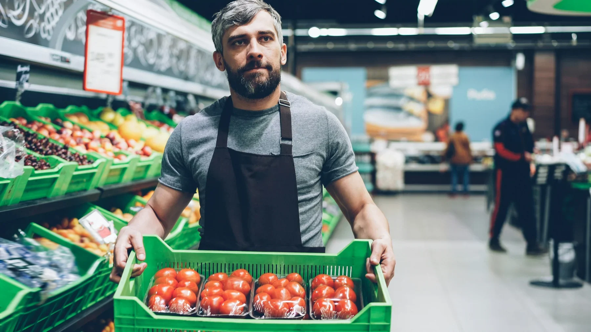

Schapkaart “Lokaal uit Limburg”
Let op gele of groene schapkaarten bij producten die regionaal zijn aangeduid. Noteer direct de productnaam voor je kaarttekst.
In de winkel
Maak je bezoek efficiënter: let op schapcommunicatie, displays, afdelingen en vraag gericht naar lokaal uit Limburg.
Let op gele of groene schapkaarten bij producten die regionaal zijn aangeduid. Noteer direct de productnaam voor je kaarttekst.
Bij groente, brood, kaas of borrelproducten kan een hangkaart extra herkomstinformatie geven. Die tekst kun je vertalen naar een korte gastuitleg.
Kijk vooral bij groente & fruit, zuivel, bakkerij en borrel. Dit zijn logische plekken voor lokale seizoensproducten.
Vraag gericht: “Welke lokale producten zijn deze week interessant voor mijn kaart?” Zo kom je sneller bij actuele producten.
Gebruik beschikbare herkomstinformatie als basis voor tafelkaart, menutekst of social post. Hou het kort en concreet.

Begin bij groente & fruit voor seizoensideeën, loop daarna langs zuivel en bakkerij voor kaas, brood en vlaai, en sluit af bij borrelproducten. Zo bouw je in één winkelronde een compleet lokaal kaartidee.
Bekijk categorieën